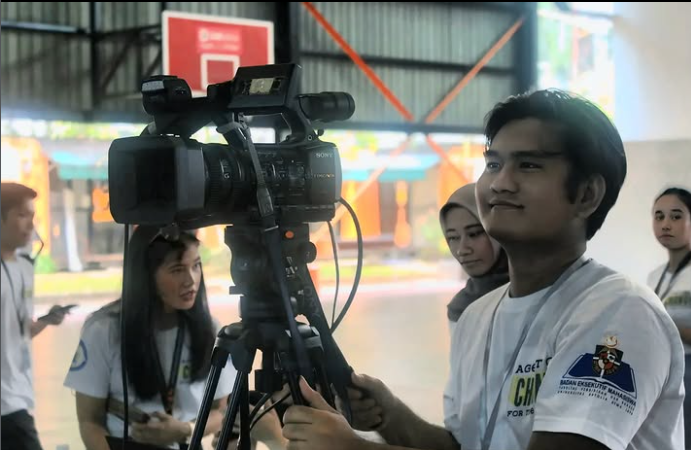
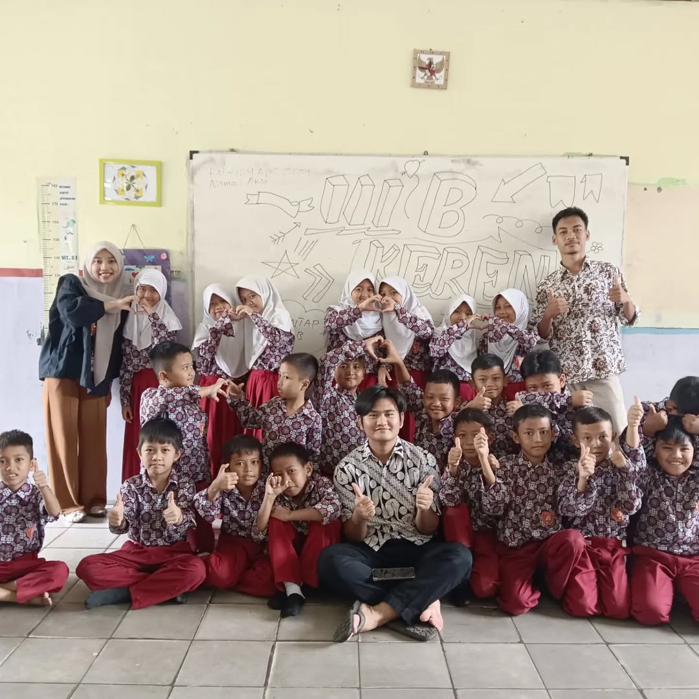
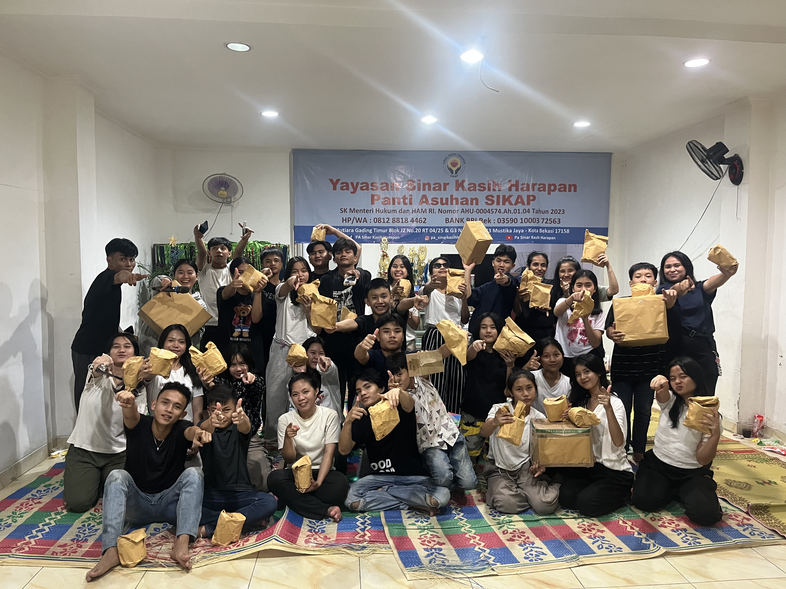
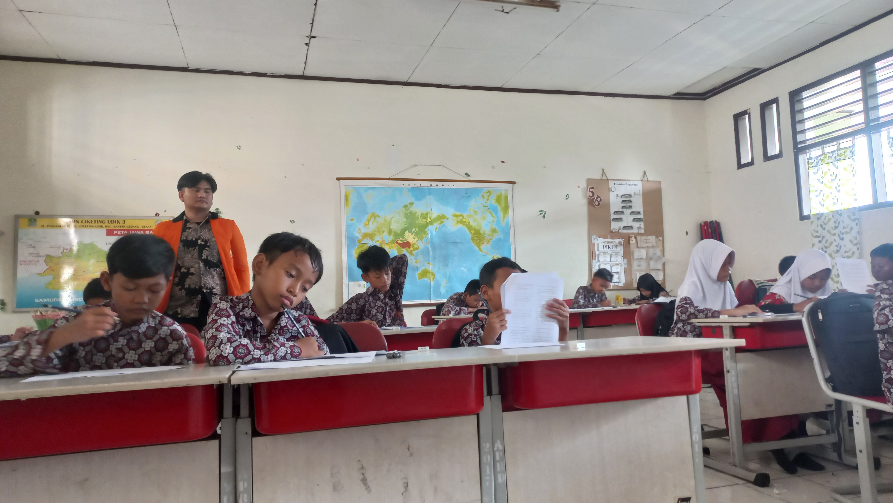

My Portfolio
A collection of works, projects, and achievements throughout my academic, professional, and organizational journey.

Numeracy Literacy Level of Grade V Students at SD Negeri Ciketing Udik 3
A descriptive quantitative study to identify the numeracy literacy level of Grade V students based on the PISA 2022 and AKM frameworks. Measures three key aspects: Formulating, Employing, and Interpreting — in response to Indonesia's low scores in international assessments.

Campus Teaching Program (Kampus Mengajar)
Participated in the national Campus Teaching Program, serving as a student educator at elementary schools to help improve literacy and numeracy learning quality.

Documentation Coordinator
Responsible for coordinating all documentation activities at the PKKMB orientation event for PGSD Program, covering 200+ new students.

Secretary of BPM FPB
Served as Secretary of the Student Representative Board of the Faculty of Education and Language (BPM FPB), responsible for administration, meeting minutes, and coordination of faculty-level student legislative activities.

National Student Gathering Committee
Actively involved as a committee member in a national-level student gathering, managing logistics and documentation throughout the event.

Interactive Learning Media Development
Designed and created image and animation video-based learning media for Grade III elementary school Science subject.
Thesis: Numeracy Literacy of Grade V Elementary Students
Measured numeracy literacy levels of 52 students at SDN Ciketing Udik 3 using PISA 2022 & AKM-based instruments across three aspects: Formulating, Employing, and Interpreting.

Secretary of Yayasan Sinar Kasih Harapan
Serving as Secretary of Yayasan Sinar Kasih Harapan since 2023, managing foundation administration, official correspondence, program documentation, and supporting social welfare operations.

Differentiated Learning Workshop
Participated in and facilitated a workshop on differentiated learning methods for prospective elementary school teachers within the University environment.

Paskibra Coach — Atma Jaya University
Trained and mentored Paskibra members at Atma Jaya University in flag ceremony protocols, marching discipline, and team coordination for official university ceremonies.

Analysis of Three Numeracy Aspects: Formulating, Employing, Interpreting
Thesis findings reveal that most students fall in the low–moderate category (average 22.56/51), with recommendations for periodic measurement and more contextual learning approaches.
Interested in Collaborating?
If you have an exciting project, activity, or opportunity to work together, feel free to reach out to me!